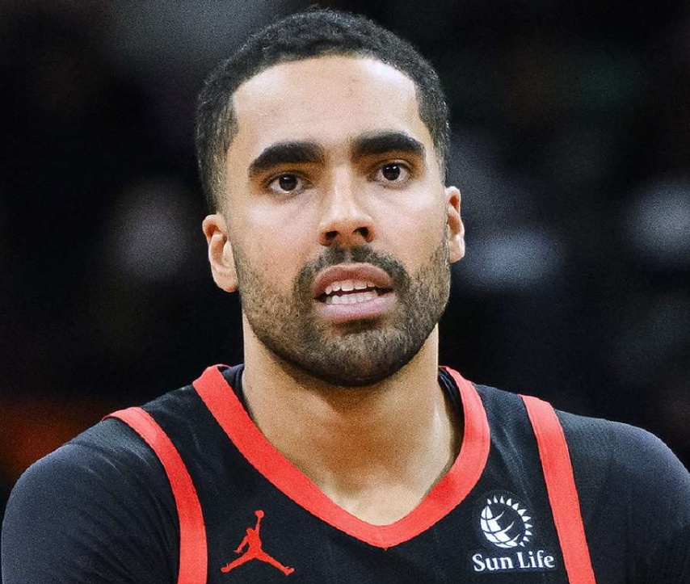

Trail Blazers coach Chauncey Billups was arrested on October 23 on charges of rigging underground poker games that were backed by Mafia families, authorities announced. It's a shocking development taking place just after the start of the new NBA season and Portland will now have to forge ahead under interim coach Tiago Splitter with Billups facing federal charges
That pressure thing is nothing to me, man, Billups said. I do the best I can and let the chips fall where they may. You know that about me by now.
As the basketball world attempted to come to grips with the news, one quote Billups gave during his postgame press conference on following their game went viral. Following the Blazers' opening night loss to the Timberwolves, Billups was asked if he felt extra pressure for his team to perform given the franchise's prospective new owner, Tom Dundon, was in the stands. He used a metaphor in his response, which obviously ended up rather prescient. "That pressure thing is nothing to me, man," Billups said. "I do the best I can and let the chips fall where they may. You know that about me by now."
NBA champion Chauncey Billups was placed on administrative leave by the NBA following his October arrest on gambling-related charges. While his lawyer has denied the allegations against Billups and maintained the former athlete's innocence, Billups has sold his Oregon home in Lake Oswego. The massive sale of his home comes just weeks after the suspended Portland Trail Blazers head coach pleaded not guilty to the shocking charges against him.
According to several sources, including Oregon Live, Billups listed his nearly 8,000-square-foot home for $4.275 million in late November 2025. Today, the enormous property is listed as "pending sale," according to public records.
Prosecutors in the case allege Billups served as a "face card" or celebrity lure for high-stakes, rigged poker games allegedly organized by members connected with the mafia.
Rozier faces federal conspiracy wire fraud and money laundering charges, and after he entered his not guilty plea, the court released him on $3 million bond. Magistrate Judge Clay Kaminsky also instructed him not to gamble, possess firearms or make contact with victims, co-defendants and witnesses in the case. Rozier surrendered his passport, as well, and was restricted to traveling between Florida, Ohio and New York.
Rozier faces federal conspiracy wire fraud and money laundering charges, and after he entered his not guilty plea, the court released him on $3 million bond. Magistrate Judge Clay Kaminsky also instructed him not to gamble, possess firearms or make contact with victims, co-defendants and witnesses in the case. Rozier surrendered his passport, as well, and was restricted to traveling between Florida, Ohio and New York.
Co-defendant De'Niro Laster, a former college football player at Kentucky, Minnesota and North Carolina Central, joined Rozier in court. He also pleaded not guilty to two charges and was released on $50,000 bond.
Rozier was implicated in the sports betting case for his alleged involvement in a sports betting ring that involved current and former NBA players trading inside, non-public information generally about injuries and illnesses. Rozier allegedly informed Laster ahead of a March 2023 game that he would remove himself early from the contest, and the indictment states that Laster sold that information to gamblers, who then distributed it through a betting syndicate.
Rozier, a member of the Charlotte Hornets, played just 10 minutes in that game against the New Orleans Pelicans before he left with a foot injury. Sportsbooks received $200,000 in wagers on prop bets for Rozier's points, rebounds and assists totals.
Rozier, then a member of the Charlotte Hornets, played just 10 minutes in that game against the New Orleans Pelicans before he left with a foot injury. Sportsbooks received $200,000 in wagers on prop bets for Rozier's points, rebounds and assists totals. The NBA previously launched its own investigation into Rozier, but the league did not find evidence of rules violations. It placed Rozier on leave after his arrest on federal charges. The next procedural hearing for all of the defendants is set for March 4, 2026. Judge Ramon Reyes said at a previous hearing that the defendants will remain grouped together and that he intends for the trial to begin by next September.
Jones is implicated in both the sports betting and illegal gambling cases and pleaded not guilty on Nov. 6 to two charges. He was released on $200,000 bond and prohibited from gambling or making contact with organized crime.
Jones allegedly relayed inside information on two Los Angeles Lakers games to a co-conspirator, who then used the data for betting purposes. He was also charged for luring players, along with Billups, into rigged poker games. Jones and Billups are both accused of taking a cut of the money from those games as compensation for their roles.
The former Cleveland Cavaliers guard is accused of sharing or attempting to share inside information with bettors. The sports betting indictment alleges he gave others a tip about "a prominent NBA player," who appears to be LeBron James, a former teammate and longtime friend. James is not accused of any wrongdoing.
The indictment alleges Jones sent a text message to a co-conspirator on Feb. 9, 2023, saying: "Get a big bet on Milwaukee tonight before the information is out! [Player 3] is out tonight." James missed the Lakers' game that night against the Milwaukee Bucks due to ankle soreness.
Prosecutors say the cheating scheme brought in more than $7 million for participants. According to the indictment, the games were orchestrated using high-tech gadgets including X-ray tables, a rigged card-shuffling machine, hidden cameras and glasses designed to detect otherwise invisible markings on cards.
Prosecutors say the cheating scheme brought in more than $7 million for participants. According to the indictment, the games were orchestrated using high-tech gadgets including X-ray tables, a rigged card-shuffling machine, hidden cameras and glasses designed to detect otherwise invisible markings on cards.
"This is the insider trading saga for the NBA"
Patel, the FBI director, was also asked why he said this announcement would not be popular. "It's not popular to go after some of the defendants we went after today," he said, adding: "Justice is blind." The language mirrors the kind that Adam Silver uses for these types of situations and how he has talked about the Jontay Porter case.
Hit unders for the big numbers, Porter wrote to an alleged conspirator on Jan. 26, 2024, according to a court complaint against yet another alleged schemer, Shane Hennen. He was arrested Sunday at the Las Vegas airport while boarding a flight to Panama.
“Hit unders for the big numbers,” Porter wrote to an alleged conspirator on Jan. 26, 2024, according to a court complaint against yet another alleged schemer, Shane Hennen. He was arrested Sunday at the Las Vegas airport while boarding a flight to Panama.
“No blocks no steals. I’m going to play first 2-3 minute stint off the bench then when I get subbed out tell them my eye killing me again,” Porter wrote, according to the complaint. It identifies him only as “NBA Player 1” but makes clear through references — such as the details of his guilty plea last year — that it’s Porter.
He had scratched an eye during a game on Jan. 22, 2024, keeping conspirators in the loop by text even from the arena, according to the complaint. But he wasn’t on the injured list when the Raptors faced the LA Clippers four days later.
Porter ultimately played about 4 1/2 minutes in that game before saying he had aggravated the eye problem. Then he pulled out of a March 20 game against the Sacramento Kings after less than three minutes, saying he felt ill. His performance in both games fell well below what sportsbooks had anticipated.
Porter told a court in July that he got involved in the plot to try to clear his own gambling debts. He’s set to be sentenced in May. He could face anything from no jail time to 20 years behind bars; prosecutors have estimated his sentence at about 3 1/2 to four years in prison.